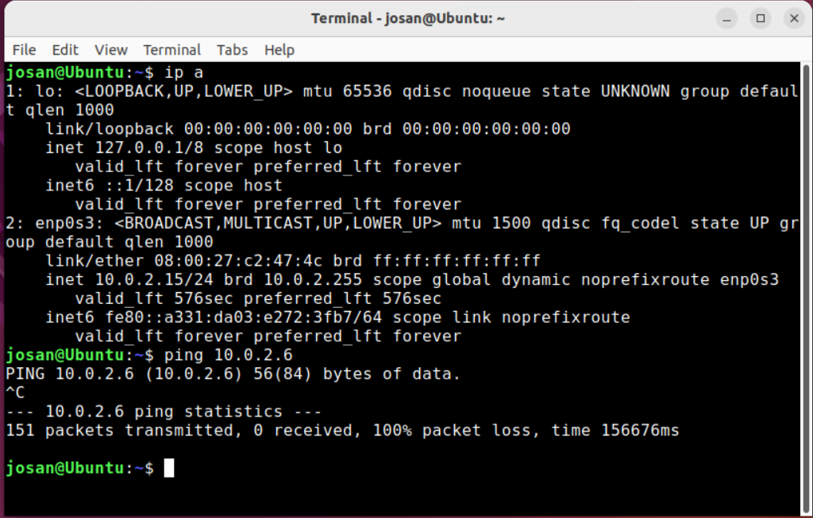

Bienvenidos a este How-To hecho por José Antonio Sánchez Pérez, alumno de 1º de DAW en Albor Croft.
En este tutorial, os voy a explicar como hacer la instalacion de maquinas virtuales con windows y ubuntu, que se conecten entre sí y poder hacer una transferencia de archivos.
1º Paso: Descarga de programas
Para empezar, vamos a descargar los siguientes softwares que te lo dejo aquí abajo para hacer un uso correcto del mismo.


Para poder usar este programa, tenemos que descargar un sistema operativo. Para ello nos descargaremos una ISO de Windows 10 y de Ubuntu 22.04.4, que es el que te facilito aquí arriba.
Empezamos con el Windows 10, que será un proceso sencillo, donde tenemos que descargar un asistente a través de la pagina oficial de microsoft. Luego le damos a Descarga ahora la herramienta y se descarga la herramienta en el ordenador. Luego lo ejecutas y seguimos los pasos:
- Aceptar los terminos y condiciones
- Seleccionar crear medio de instalación
- Seleccionamos la arquitectura del equipo, idioma y región
- Descargar en archivo ISO
- Seleccionamos la ubicación donde se descargará
- Esperar (depende de la velocidad del ordenador y del internet puede variar)
Una vez instalado, cerramos el asistente y vamos al siguiente paso, que sería instalar Ubuntu.
Nos vamos a la pagina web de ubuntu y lo descargamos. (Depende de la velocidad del ordenador y del internet puede variar)
Y ya estaría, la parte de descarga de todos los programas e ISOs estaría realizado.
2º Paso: Instalacion y configuración del programa
Habiendo hecho la primera parte, procederemos a instalar el programa de VirtualBox. Para empezar ejecutamos el programa y seguimos los pasos. Es algo sencillo, donde solo tenemos que darle a siguiente hasta que se instale, lo ejecutamos y nos saldria una pestaña tal que así:
Le damos a nueva y seguimos los siguientes pasos (Estos pasos sirven para ambos Sistemas):
- Le damos un nombre a la maquina virtual que será Windows o Ubuntu (depende de la maquina que hagamos) Y luego le metemos la ISO que será la que instalamos antes y automaticamente se pondrá el tipo y la version del sistema y dejamos desmarcada la de omitir desatendida.
- Luego, le damos un nombre de usuario y una contraseña. Otra cosa importante es meterle la clave de producto de Windows 10 y como hemos seleccionado la versión Home le vamos a poner esta clave: TX9XD-98N7V-6WMQ6-BX7FG-H8Q99. El nombre de la maquina y el del dominio lo vamos a dejar como está.

- En este apartado, le vamos a dar los recursos del ordenador, nunca podrá ser más de lo que tu ordenador tiene (que sería el anfitrión) Ya de por si el programa te pone un limitador. En este ordenador como tenemos recursos le vamos a meter 4096MB (4GB) de RAM y 2 nucleos de procesador para que no nos vaya mal el ordenador.
- Aquí le vamos a dar el espacio de disco duro, le vamos a dejar el que nos de por defecto.
- Y para terminar, nos sale un resumen de lo que hemos configurado y ya habriamos hecho todo, para finalizar le damos a Terminar y se iniciará el proceso de instalación
3º Paso: Instalacion y configuración de Windows
Ahora toca esperar a que se instale, como mencione antes, al terminar el proceso de configuración se inicia la instalacion del sistema operativo y windows se hace solo. Nos saldría esta pestaña:
Tan solo hay que dejarlo que siga la instalación y nos saldría directamente el escritorio de windows y habría que hacer lo siguiente para tener el sistema con los drivers:
Con esto ya habriamos instalado los drivers de la maquina virtual y podremos cambiarle la resolución, hacerle puentes de red y transferir archivos entre ordenador anfitrion a invitado y viceversa.
En principio con windows ya estaría listo para usar, luego lo volveremos a ver para hacer más configuraciones pero por el momento está así bien.
4º Paso: Instalacion y configuración de Ubuntu
Tras haber hecho el paso 2, hay cosas que cambian como que no es necesario poner la clave del producto ya que Ubuntu es un software libre, por lo que es gratuito y no es necesario pagar por ello.
Tras las instalación tendremos que iniciar sesion en ubuntu con las credenciales que hemos puesto antes y hacemos lo que nos pide en la primera ventana (como recomendación, no inicies sesion con google o cualquier otra cosa, vamos a usar la cuenta simple ya que estamos haciendo pruebas) y si queremos podemos cambiarle el idioma que viene en parte en español y en otra parte en frances. El cambio de idioma es sencillo y le dejamos la web oficial de ubuntu con sus pasos a seguir.
En este caso, no es necesario instalar las guest additions de VirtualBox ya que Ubuntu tiene un sistema donde no es necesario instalar ningun driver ya que este se adapta a cualquier sistema.
Pues ya habriamos terminado y pasariamos al siguiente paso.
5º Paso: Configuración de la Red NAT
Para que las maquinas virtuales se hablen entre sí, hay que hacerle la siguiente configuración que está en el siguiente vídeo.
Configuramos la Red NAT tal y como lo hemos hecho en el video. Podriamos cambiarle el nombre a otro y el prefijo ipv4, pero no es recomendable ya que podriamos tener problemas.
Ahora vamos a hacerle un ping entre ellas y tenemos que saber que direccion ip tiene cada una por lo que habrimos el cmd (en el caso de Windows) y el terminal (en el caso de Ubuntu).
En este caso, que es windows, le ponemos el comando en el simbolo del sistema ipconfig y nos da la siguiente dirección ip.
En este caso, que es ubuntu, le ponemos en el terminal ip a y nos da su direccion ip.
Ahora le hacemos ping entre una y la otra. Lo haremos de la siguiente manera.
Aqui vemos como Ubuntu establece la conexión con Windows y es satisfactoria.
Aqui vemos como Windows establece la conexión con Ubuntu y es satisfactoria.
Con este apartado ya habremos terminado, pasamos al siguiente.
6º Paso: Instalación de SAMBA
Este proceso solo sería para Ubuntu para que se conecten con los equipos de Windows.
Aquí podrá ver un video donde se explica todo y abajo los comandos a seguir.
Los metodos son sencillos, pero si te pierdes en alguno puede que no te llegue a funcionar, por lo que hay que hacerlo todo de esta manera y en este orden.
Final
Bueno, pues hasta aquí estaría el how-to. Ha sido algo sencillo pero muy inmenso en el sentido de pasos a realizar y comandos que escribir para que todo salga bien.
Espero que haya servido de ayuda, para cualquier duda no dudes en ponerte en contacto conmigo: josan10072005@alumnos.alborfp.com